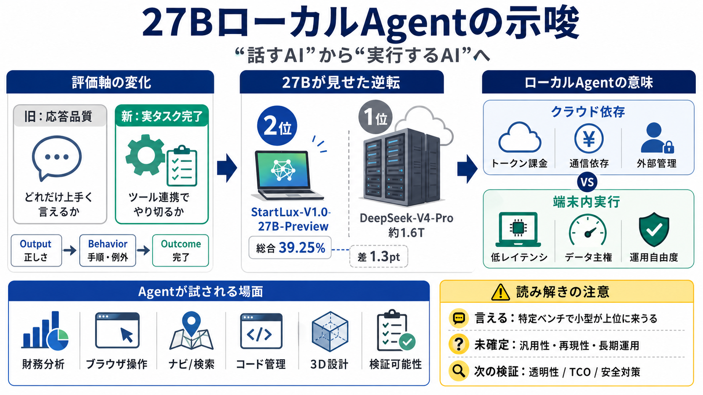

Gemma 3 27B vs Trinity-Large-Thinking: AI Benchmark Comparison 2026 | BenchLM.ai
Title: Gemma 3 27B vs Trinity-Large-Thinking: AI Benchmark Comparison 2026 | BenchLM.ai # Gemma 3 27B vs Trinity-Large-T…

Title: Gemma 3 27B vs Trinity-Large-Thinking: AI Benchmark Comparison 2026 | BenchLM.ai # Gemma 3 27B vs Trinity-Large-T…
NOTA Inc. holds the highest patent volume in the dataset, with multiple active patents across Japanese, Korean, and US j…
Title: Compare Large 2 (Jul '24) vs Qwen3.5 27B (Reasoning) | AI Model Comparison **NEW** All AI Models in one Chat App …
Title: Compare Qwen3.5 27B (Reasoning) vs Trinity Large Thinking | AI Model Comparison **NEW** All AI Models in one Chat…
Title: Test-time compute vs parameter scaling in AI reasoning | PatSnap # Test-time compute vs parameter scaling in AI r…